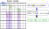
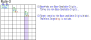
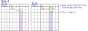
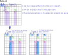

Currently under study. Provisional version ......
There are contradictions, insufficient explanations, logical inconsistencies,
ambiguity, errors, inconsistencies, etc.
This page is based on
by:David P Bird "JExocet Compendium"
http://forum.enjoysudoku.com/jexocet-compendium-t32370.html
Most of it is "reorganization of this page, adding some originals".
Many thanks to David P Bird.
Exocetの基本
Exocet is a "different type of Locked" from other algorithms, and is a fascinating and profound algorithm.
There are a wide variety of situations that it can be applied to and number patterns that can be excluded,
and some situations can be solved with Exocet alone.
The addition of Exocet, a new powerful algorithm for solving Sudoku puzzles,
has opened up new directions for analytical algorithms.
It foreshadows the discovery of even more new methods.
There are various types of Exocet, from basic and simple types to extended types, and Exocet is the general term for them.
Exocet uses somewhat complicated logic. First, let's look at the basic types.
The first one is Junior Exocet (JE2).
JExocet sample ...
Definition of JExocet ... for JE2
JExocet is Locked due to the relationship between Base, S area, and Target.
The two cells in Base have two or more candidate digits.
If there are two, it is a LockSet, so three or more.
JExocet lock: Any two digits selected from the candidate digits will be positive in T1 and T2.

JExocet Locked is based on the shape definition and candidate digit conditions shown below.
(1) JE2 shape definition
Exocet has multiple role cells, arranged as shown in the following diagram:
- There are two types of target cell arrangement: diagonal and aligned.
- Companion cells and Mirror cells are placed in relation to the position of the Target cell.
- Escape(*) is a cell where no Base candidate digits exist.

*To understand how Exocet works, it's helpful to distinguish between directions.
The Base alignment is used as the reference, and the direction parallel to this is Parallel.
and the direction that crosses it is Cross. These are often omitted when it is clear from the context.
The shape of JExocet can be derived in the following steps (for JE2). These steps can also be used as a reference for creating the solution code for JExocet.
- Step 1: Select one cell (Stem cell) on the board and the direction (row, column). This determines the mini-line.
The two Base (B1, B2) cells, Band, and two blocks (Block1, Block2) of the mini-line are determined. The Cross-Line-b (S0) is also determined by the Stem cell and direction.*A mini-line is three cells in a row or column within a block.
*The Stem cell is used to guide the shape and is not involved in the definition or logic of the Exocet. The Stem cell can be either fixed(given/solved) or unfixed.
-
Step 2: There are 6 cells in each of blocks 1 and 2 that are not connected to the Base.
From each block, select a Target cell with an undetermined number (T1, T2).
The Companion cell, Mirror cell, Cross-Line-x, S1, and S2 are determined from the direction and the Target cell (T1, T2). These cells can be in either a fixed or unfixed state.

(2) JE2 candidate digit conditions
Based on the definition of the JExocet shape, the following conditions (R1 to R4) are tested for the Base digits.
When there are two or more digits that pass the test, the candidate digits that meet the R1 to R4 conditions are marked as Locked.
In addition, candidate digits that meet the R1 to R4 conditions are referred to as "Locked digits".
JE2 Conditions for candidate digits
| R1 | The Base cells(B1, B2) are both unfixed cells, contain the same digits, and have a total base digits of 3 or 4 (#abc/#abcd). |
| R2 | The target cells(T1, T2) are both unfixed cells and together have two or more base digits. |
| R3 | Companion cells do not contain a Base digit. |
| R4 | For every Base digits, the Base digits of "Given, Solved, Candidate" in the S domain {S0, S1, S2} are covered by two Cover-Lines. |
These conditions will now be explained in more detail.
補足:
| R1 | If the number of base digits is 2, it is a LockedSet. If it is 5 or more, it is predicted that there will be more constraints and it is probably not possible to have any. Therefore, R1 is a "the number of base digits between 3 and 4". |
| R2 | Candidate digits other than the base digits may be included |
| R3 | Companion cells can be fixed or unfixed. |
| R4 | If what is in the S area is fixed, it can be interpreted as either "Parallel/Cross Cover Line". (use "Parallel" below) |
| - | Mirror has no conditions regarding Locked. Even if the Base digit is Locked, this is still a possible solution state. Depending on the arrangement of Base digits and non-Base digits in the Base-Target-Mirror, this may result in an irrational state. |
If two or more Base digits satisfy R1 to R4, JExocet Locked is established.
The following exclusion checks the position and number of digits to find and exclude irrational states and candidate digits.
(3) JExocet logic ... Proof of Locked
Base digits that satisfy R1 to R4 are Locked.
When any two digits are selected from the Base candidate digits, the following proposition holds for these two digits.
Proposition: If it is positive in Base, then it is also positive in Target1 and Target2.
- <>Proof of JE2 Locked (CL:Cross-Line)
- L1. In the Base cell, the base digits #ab is positive.
- L2. CL-b, CL-1, and CL-2 each have three instances of #ab (Sudoku rules), for a total of six instances.
- L3. From R4, S cell (S0, S1, S2) has two #a CoverLines and two #b CoverLines.
- L4. Because "6-4=2", there are instances of #a and #b in the Band area of CL-1 and CL-2.
- L5. The #a and #b instances are not in Escape or Companion, so they are in Target1 and Target2, respectively. (It is not clear which one.)
* Proof of this is from the following site/post:
SudokuWiki.org
https://www.sudokuwiki.org/exocet
... by: Anonymous Saturday 8-Jan-2022
* To distinguish the truth or falsity of a proposition,
use positive/negative to indicate the truth or falsity of the content of the proposition.
Excluded
This is where Exocet really takes off, and it gets dynamic and exciting.
Exclusions 1-12 are those listed in the Bird document,
and the numbers and conditions follow those in the original document.
As stated in the Bird document,
it is important to note that there are prerequisites for the application of the exclusion rule.
- [JExocet Locked] When R1 to R4 of JExocet are true:
If choose any digit(#a) from the Base and assume it is positive, then #a will be positive in the Target. It can also be deduced that Mirror contains #a and non-#a. However, this is a conclusion derived from a hypothesis and is not definite.
In the case of Locked, the Target candidate digit also include "locked digits but non-determined digits", so the constraint relationship of Base-Target-Mirror is not definite. Therefore, (in principle) the exclusion rule regarding Target-Mirror cannot be applied.
The following inference (contrapositive) is true.
When choose any digit(#a) from the Base, if #a is negative in the Target, then #a is not the Base. - [2-Digits Locked] When the 2 base digits are determined:
When the 2 Base digits are determined, the Target digit is also determined. The other Base candidate digits become negative, and the Target is also determined to be negative. (It is not determined which digit is which Target).
The Base-Target-Mirror relationship is a constraint, and all of the following exclusion rules can be applied.
Excluded type-1 [JExocet Locked]
These are exclusion rules that can be applied when R1 to R4 of JExocet are met.
-
E1. For the Base digit #a, if the S cell (S0, S1, S2) has one cover line, #a can be excluded in the Base cell (B1, B2) and Target (T1, T2).
Assume that there are two or more candidate digits in Base with two CoverLines, which establishes JExocet Locked. If there is another candidate digit #x in Base with one CoverLine, #x can be excluded.
Since the candidate digit with two CoverLines occupy Target, there is no room for a candidate digit with one CoverLine. -
E2. Any Base digits that cannot be positive for at least one target and its mirror at the same time can be eliminated.
Looking at the Base digits #a in "JExocet Locked", at least one target has #a. If the mirror corresponding to the Target does not have #a, #a is not a Base digit.
-
E3. Non-Base digits in Target are negated.
In the Exocet Locked state, the Target will contain one of the Base candidate digits. Therefore, there is no room for non-base digits cannot be a target.
 -
E4. If the Base Digits are determined to be positive in one Target, it is negative in the other Target.
Each Target has a different Base Digits. If one Target is positive, the other Target will be negative.
If the other is an Object and there are determined digits in two cells, the numbers in scope will be excluded.

Excluded type-2 [2-Digits Locked]
Exclusion type2 is an exclusion rule that can be applied when the two Base candidate digits are determined. The two Base digits are determined to be positive, and the Target is determined to be positive. This can be at the beginning of a position, or as a result of applying an exclusion rule.
-
E5. A Base digits with Cross Cover-Line is Negated with the corresponding Target.
This can be derived as follows:- (1) Suppose S1 has a Cross-Cover-Line of #a .
- (2) Proposition: In T1, Base candidate digit #a is positive.
- (3) The #a in Base is positive.
- (4) S0 has instance #a.
- (5) There is no #a instance in S2.
- (6) T2 has +#a.
- (7) T1#a and T2#a are contradictory (other Base Ditits cannot be placed in Target).
Therefore, proposition(2) is false and #a in T1 is negative.

-
E6. Any base digits that cannot be positive in the Mirror corresponding to the Target is negative in the Target.
By the definition of JExocet, the proposition: Any Base digit that is positive in Target is also positive in Mirror.
Rule-6 is the contrapositive of this proposition.
A Mirror cell can also be a fixed value. If it is a fixed value that is different from the Base digit.

-
E7. If one of the Mirror Cells does not contain the Base digit in the corresponding Target, then the other Cell of the same Mirror contains the Base digit in the corresponding Target.
Based on the position of the Mirror and the spheres of influence of the Base and Target, the Mirror has a Base digits that is in the Target.
If a base digit is not in M1A, it is in M1B. Therefore, non-base digits can be excluded from M1B.
-
E8. "Assume the Base digits is determined." If the mirror cell contains one non-Base digits, it is positive.
The Mirror cell contains a Base digit and a non-Base digit.
Assume that the Base digit is determined.- For non-Base digit included in the mirror,
- If there is one cell: The non-Base digit is determined, and the non-Base digit can be excluded from referenced cells.
- If there are two cells: The non-Base digit can be excluded from cells that commonly reference two mirrors.

-
E9. When a Mirror has a Locked digit, if that digits is a Base digitt, other Base digits can be excluded in the Mirror. Alternatively, if that digit is a non-Base digit, other non-Base digit can be excluded from the Mirror.
Rule-9: Distinguish between Base_Locked and Mirror_Locked.
In the case where the Mirror_Locked digit is a non-Base digits, this can be applied even if the base digit is non-Locked.Mirror contains Base digits and non-Base digits.
When Mirror contains locked digits [Mirror_Locked], the locked digits are constrained to contain both base and non-base digits.
No two mirror cells can contain two Base digitss. Similarly, no two mirror cells can contain two non-Base digitss.- When the Mirror_Locked digits is a Base digits and is Base_Locked, the other Base digit in the Mirror is negated.
Note that the precondition "Locked" for E9 is ALS (one digit in two cells), which means there is no digit of interest (#x) in the cell with the gray background in the image below. When combined with the exclusion condition, it becomes "Locked".

[補足]
[Notes]
The "row, column, block constraint" and "digit 1-9 constraint" in Sudoku rules are equivalent to "row, column, block, digit constraint".
General Logic is an analysis algorithm based on this.
ALS (Almost Locked Set) is generally "n+1 digits in n cells", but "n digits in n+1 cells" is also "ALS".
General Logic is an analytical algorithm based on this.
ALS(Almost Locked Set) is generally "n+1 digits in n cells," but "n digits in n+1 cells" is also ALS. -
E10. A known base digits can be excluded by two Base spheres of influence or two Target spheres of influence.
A known Base digits is a number that is confirmed to be Positive in the Base cells. For example, two digits in two cells, i.e. a LockedSet, is in a known state. Since the two Bases are confirmed to be Positive, they are Negative in their sphere of influence. Also, if the Base digits is known, the Target will be Positive and Negative in their common sphere of influence.

-
E11. A digit that appears only once in the Escape Cell of a Cross-Line is negated in all cells of the Cover House other than the "S".
We have amended paragraph 11 of the Bird document. If the base figures are finalized, we will change it to paragraph 12.
The digit covered in this section must be one of the possible solutions for JExocet. This rule cannot be applied indefinitely.
- (1) #abx is a candidate solution for JExocet.
- (2) If #ab is determined to be a solution, #x is not a solution. In this case, #x is in Escape.
- (3) Since #x is a candidate solution for JExocet,
the conditions of jExocet (the relationship between Base, Target, and S) are valid. - (3) Since there are two #x in the S area, their placement is as shown in the following two types.
- (4) Therefore, #x in (PCL-{S}) is negated.(PCL:Parallel-Cover-Line)

-
E12. If two base candidate digits are determined to be positive, then any digit instance in the S domain that prevents the two instances from being positive is negative.
Assume that two base candidate digits(#ab) are positively determined.- (1) Let T1=#a. There is no #a in S1.
- (2) According to the basic rules, there is one #a in S0.
- (3) Condition for candidate digits: According to R4, the candidate digits in the S-Area are covered by two Cover-Lines. There is a #a in S2.
- (4) An element(▲) that is outside the S-Area of Cover-Line negates the Cover-Line condition(R4).
(PCL-{S})#a is negative (PCL:Parallel-Cover-Line, -:Difference set)

Excluded type-3
Exclusion-3 is an exclusion based on two Base digits. In Bird's documentation, this is the "Incomtible Base Pairs" section.
The candidate digits in the two bases are free combinations and are not candidates for the Base digits.
For example, if the candidate digits in the base are (1,2,3), the combinations are {(1,2),(1,3),(2,3),(2,1),(3,1)(3,2)}.
Also, if the candidates in the two Bases are different, this is a possible combination pattern.
Test each of these combinations. Due to the nature of Exocet, we use the following:
- The Base digits to be tested are in Target.
- The instances of the two Base digits are in S0. The instances may be confirmed.
- The two Cross-Blocks of the two Base Cells have Base digits in the candidate state.
- Case-1: Instances in S0 of two Base digits are in the same cell.
This pattern is not possible as a Sudoku solution, so this combination pattern can be excluded. - Case-2: Instances in S0 of two Base digits are in the same Cross-Block.
This pattern eliminates all Base digits in the Cross-Block.
It has no effect on the other Cross-Block.
Therefore, this combination is in a Base-UR relationship, and
This combination pattern can be excluded due to the uniqueness of the Sudoku solution. - Case-3: The instances in S0 of the two Base digits are in different Cross-Blocks.
This pattern eliminates each Base digit in each Cross-Block.
In this case, it will not be Base and UR.
Therefore, this combination pattern remains a possible solution.
"Excluded type-3" detects ineligible base digit combinations, which updates the "known base digits".
This may expand the areas where the exclusion rule can be applied.
For this reason, GNPX tests "Exclusion type-3" before "Exclusion type-1,2".